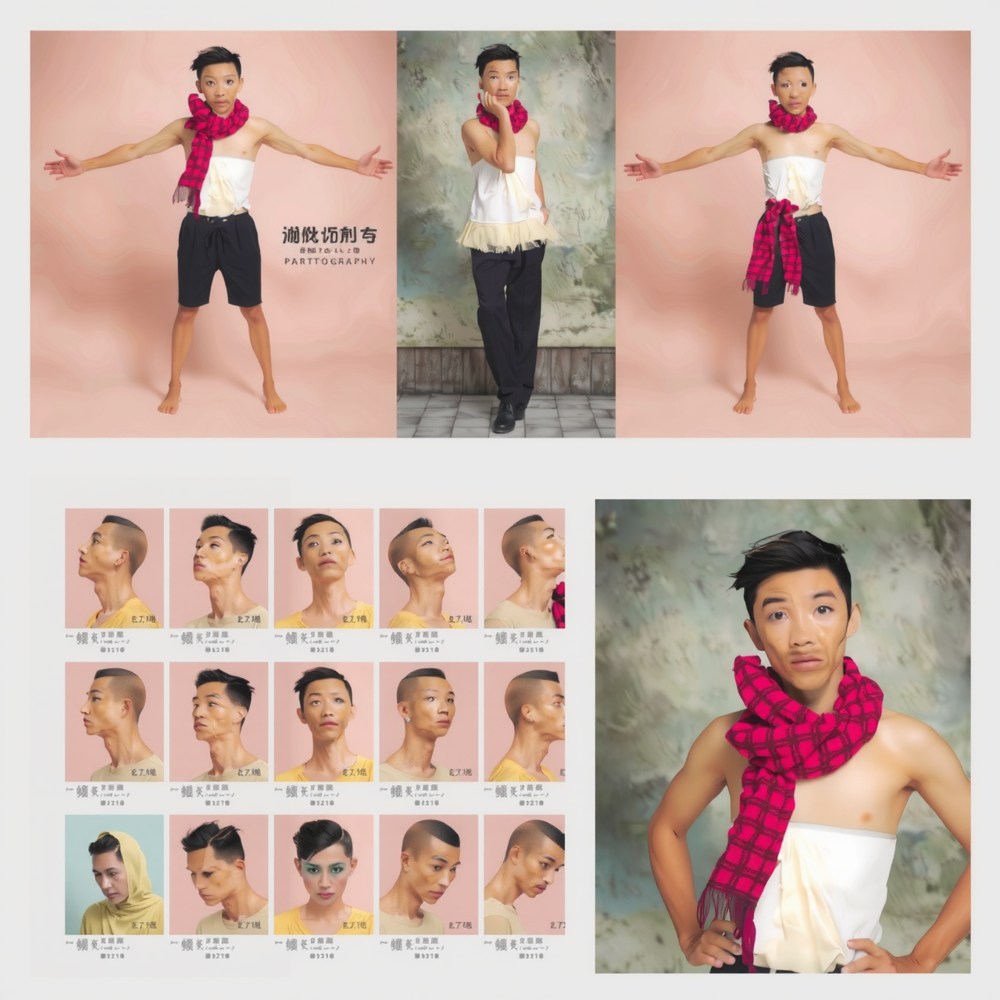
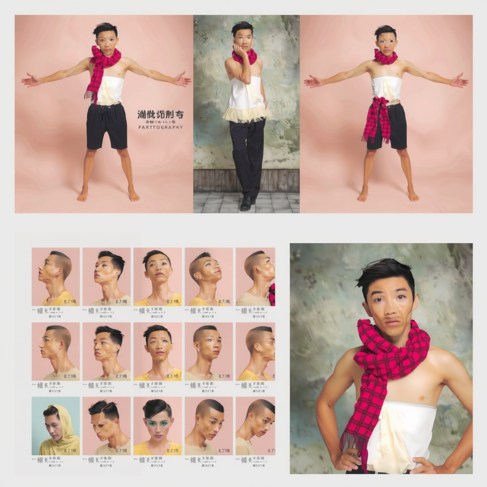
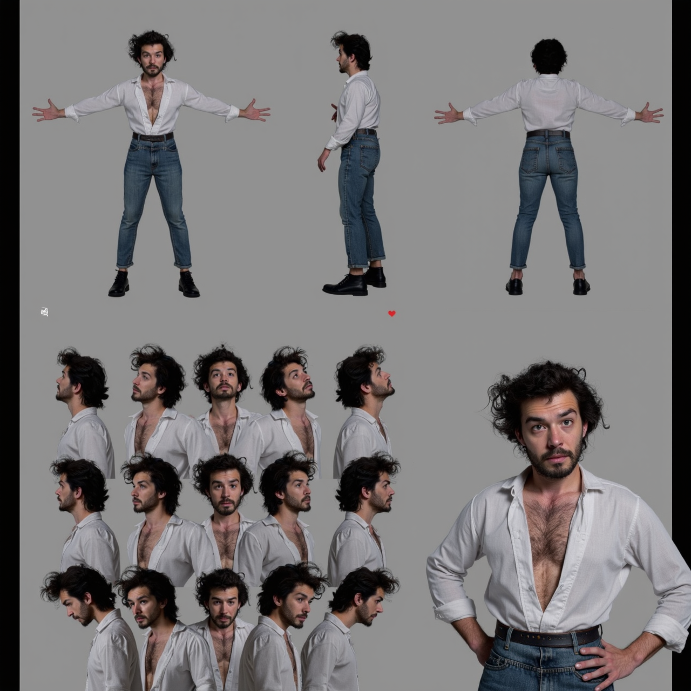
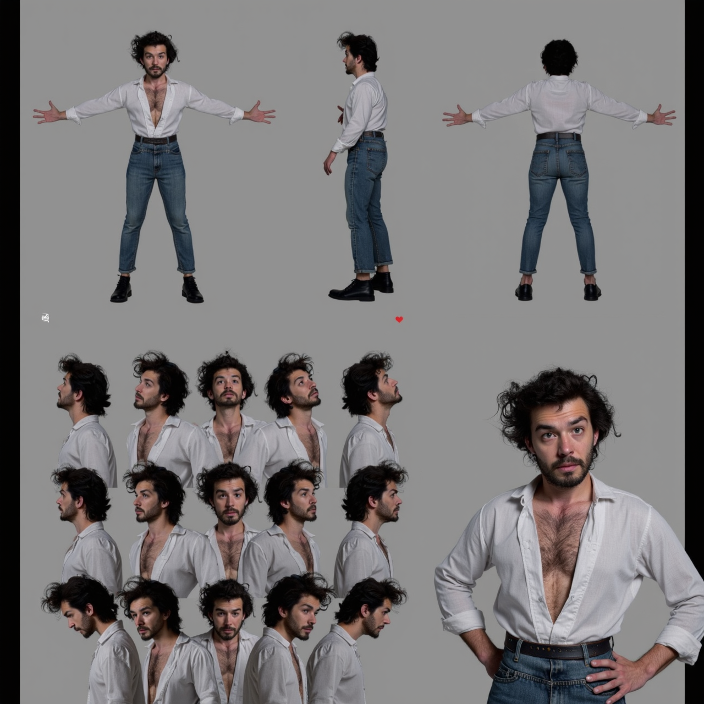

Steal Like an Artist
Creative Documentation of an AI-generated Short Film
Introduction
My project aims to tell the story of a frustrated artist navigating the struggles of creativity. I initially explored AI tools like DALL·E and Ideogram for character creation and scene design, but while these platforms generated visually appealing images, they lacked consistency in the artist's appearance across poses and settings. This limitation led me to train a LoRA model in FluxGym to achieve a unified protagonist and adapt workflows in ComfyUI to blend LoRA-based character generation with fixed background images. Additional tools like Photoshop Beta AI for fine-tuning, Tensorpix for quality enhancement and a GPT-trained film director for scene planning further shaped the project. KlingAI became my main tool for animating still images into cohesive video scenes.
Discarded Ideas
Early Explorations
The project began with a broad exploration of visual
concepts using tools like DALL·E and Ideogram.
These platforms laid the foundation for early ideation, helping to envision the protagonist and
potential scenes. However, their inability to maintain visual consistency became a significant
barrier.
Generated with DALL·E

Generated with DALL·E
Generated with Ideogram
Generated with Ideogram
I also experimented with Hailou AI for video generation, using techniques that relied on prompts and pre-generated images. This helped me understand AI's video capabilities, though the outputs were limited by poor quality and short durations. Key lessons included the importance of character consistency and generating clips in 16:9 film dimensions for a cinematic look.
Image and Prompt
Prompt
Prompt
Character Image and Prompt
Transition to ComfyUI
Recognising the need for greater control, I
transitioned to ComfyUI, a node-based interface for
AI-generated content. ComfyUI allowed me to connect nodes for specific functions like character
generation and background integration. This modular approach enabled me to test workflows for
character-to-background combinations, storyboarding and video-to-video techniques. While flexible,
these workflows often struggled with maintaining character consistency, especially when dealing with
complex backgrounds or dynamic poses.
Simple integrations:
Early attempts at
character-to-background integration produced basic results, lacking interaction between the
character and the environment.
Background
Character
Pose
Final Result
Storyboard workflow:
When integrating drawn scenes,
ComfyUI overly weighted the background, causing the character to lose consistency despite any
adjustments.
Scene drawing
1. Generated result

2. Generated result
Video-to-Video generation:
While this method captured movements
effectively, quality issues persisted despite adjustments to denoising and steps, which control
the model's iterations to refine output. Videos were
limited to a few seconds and the process offered little room for necessary refinement compared
to image editing in Photoshop.
Original video
1. Result
2. Result
3. Result
Development Process
Developing the Character
To ensure character consistency, I created "Dana's Film Assistant," a GPT-based AI trained on
cinematic storytelling. Inspired by directors like Damien Chazelle, it provided insights into scene
structure, character arcs, and visual depth.
Achieving a cohesive character design required significant experimentation. Initially, I attempted
to generate individual images with consistent facial features and manually adjust poses using
Openpose models. However, this approach proved both time-consuming and inconsistent. Instead, I
trained a LoRA model, 'Frankai,' in FluxGym using a dataset of 16 diverse images. When incorporated
into ComfyUI workflows, this model ensured consistency across varying poses and settings by
triggering its characteristics through its name.

 

 



Creating Scenes
Using ComfyUI, I generated environments with a LoRA-only
workflow,
refining them in Photoshop Beta to establish scene foundations. I then transitioned to a
dual-conditioning workflow, combining the LoRA character with the background. Balancing the "noise"
parameter was critical—higher noise produced detailed environments but omitted the character, while
lower noise prioritised the character at the expense of environmental accuracy. Experimenting with
these parameters and seed values (which ensure reproducibility) helped achieve balanced results.
For further refinement, I used Photoshop Beta to tweak hair, add artistic elements like
paintbrushes, and enhance textures, ensuring alignment with my vision.
The trained movie
director GPT not only refined prompt wording but also guided the ideation process for structuring
and planning the film. It suggested atmospheric scenes of the room without the protagonist to
establish the setting, which I incorporated in later close-up videos. Additionally, it provided
insights into camera movements, such as when to use close-ups, wide shots, zoom-ins, and the ideal
duration of each shot for a more cinematic effect.
Video Creation
For video generation, KlingAI's features, including
prompt-based generation, photo-to-video transformations, and the elements tool, allowed for
interactive scenes combining characters, backgrounds and objects. However, character poses from
input images heavily influenced animations, often resulting in unnatural movements. Careful planning
was needed to address this limitation.
Scene 1: Creative Block
The first scene introduces the protagonist in a cluttered studio, reflecting his creative struggles. Using AI tools, I generated various angles and enhanced the visuals with light grain to unify the aesthetic, including atmospheric shots of the room to set the mood.

Brushes on the Side Table
Paint and Crumpled Sketches on the Floor

Character < Background

Character < Background
Character < Background
Character < Background

Before Photoshop Beta Makeover

Before Photoshop Beta Makeover
Scene 2: Inspirational Walk
This scene features the artist exploring the city, observing the vibrancy around him. To plan the sequence, I consulted my film director GPT, which recommended a variety of shots. From these suggestions, I selected clips like a café visit and market interactions, refining them with Photoshop Beta to remove inconsistencies.
Cafe Scene:

Before Photoshop Beta Makeover


Before Photoshop Beta Makeover

Market Scene:


Before Photoshop Beta Makeover

Street Dancer Scene:
I experimented with various prompts
for the street dancer scene, but the movements consistently appeared awkward and
unnatural.


Neon Lights Scene:


Scene 3: Artistic Breakthrough
Returning to the studio, the artist approached his work with newfound inspiration. I used the LoRA workflow to generate dynamic poses, capturing the transformation in his demeanour. The shift in the atmosphere was reflected through enriched and more colourful visuals.


Scene 4: The Grand Unveiling
The final scene depicted the artist presenting his completed work in a gallery, contrasting with the rightful artist's realisation of the stolen concept. Distinct clothing choices helped differentiate the two characters, and Photoshop was used to integrate the final artwork seamlessly into the setting.


After generating all the videos, I edited them together in DaVinci Resolve, incorporating zoom and blur effects for the flashback scenes to enhance the mood, and added sound, the song Strandfeest by Bakermat, to unify the project’s tone and evoke the emotional journey of the artist.
Ethical Considerations
A key ethical issue I encountered during this project was the pervasive presence of stereotypes and
bias in AI-generated content. While the LoRA model I trained for my protagonist ensured consistency,
its limitations highlighted broader issues in AI datasets. For example, the model was trained on a
white male character, which influenced not only the protagonist’s appearance but also the
surrounding cast. Men were generated far more often than women and when women did appear, they were
often depicted with distorted features, leaving me questioning whether this bias stemmed from the
LoRA model itself or deeper flaws in the AI training datasets.
This bias extended beyond character representation. While generating scenes in a European setting,
prompts involving "neon lights at night" often included signs in Asian scripts, even though the
environment had no cultural connection to Asia. Similarly, people of colour were rarely generated
unless explicitly specified. At first, I was impressed when the AI included people of colour in an
urban graffiti street, but later, upon deeper reflection, I realised this felt less like inclusivity
and more like a reflection of bias in associating certain demographics with specific environments.
Gender-based stereotypes also became apparent in wardrobe choices. When generating people in formal
attire, men were consistently dressed in tuxedos or suits, while women appeared almost exclusively
in red dresses, reinforcing outdated norms about gender roles.
These patterns emphasise the importance of holding AI developers accountable for ensuring diverse,
unbiased datasets. Representation in AI-generated content isn't just about aesthetics, it has
real-world implications for how technology perpetuates stereotypes and impacts society’s perception
of identity and inclusivity. This project underscored the urgent need for ethical oversight in AI,
especially when dealing with human representation.
Research & Reflection
This project was a deep dive into how AI and machine learning can enhance and reshape the creative
process. Tools like ComfyUI, Photoshop Beta, and KlingAI allowed me to experiment with storytelling,
visuals and animations in ways that would be impossible on a small budget. Photoshop Beta, with its
hands-on approach, enabled precise edits, letting me fine-tune specific elements like colours or
composition without regenerating entire scenes. ComfyUI’s node-based workflows allowed for a modular
process where I could focus on balancing character consistency and background integration
effectively.
Yet, the process wasn’t without challenges. AI-generated ideas for the film’s plot were often too
generic, with predictable twists like “it was all a dream” or “he was dead the whole time.” This
required human intervention to develop a more layered and original narrative. Visuals, too, demanded
careful curation, out of several generated videos, only one or two were usable and even these
required speed adjustments and editing to meet aesthetic and narrative goals.
The unpredictability of AI brought both frustrations and surprises. For instance, I imagined the
protagonist sitting still in a café, but AI unexpectedly added him sipping coffee and sketching, a
detail that elevated the scene’s depth. However, AI’s literal interpretation of prompts often posed
issues; for example, asking for a "wobbly" motion caused objects to move unnaturally. I learned that
negative prompts and weighting techniques became essential for guiding the AI
effectively.
This project reaffirmed that while AI is a powerful tool for ideation and execution, the human touch
remains essential. Maintaining cohesion, refining ideas and creating a narrative that resonates
emotionally requires oversight that AI alone, at this stage, can’t provide. Despite its limitations,
the process was highly rewarding, showcasing AI’s ability to accelerate workflows and inspire
creativity. Ultimately, this project underscored the evolving partnership between human creativity
and technology in artistic fields.